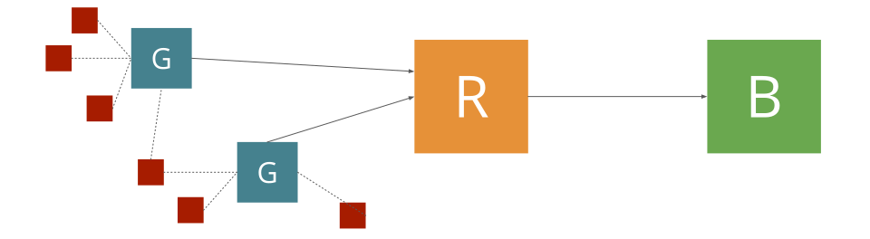
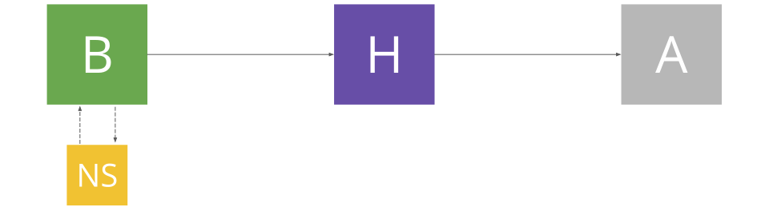

Overview
Foreword
This document hereby refers to the content of the whole website. Any contributor is welcomed and could give a hand in several manners:
- Looking for and correcting typos
- Add relevant and non redundant information
- Complete a part marked as //TODO
Regardless of what you'll attempt, make sure to check the issues list on GitHub before doing anything. Thus, if nobody is already working on something related, open an issue with a clear and concise title and briefly explain your incoming changes in the description. Then, fork the project, do your work, and create a Pull Request on the original repository.
To sum up:
- Check GitHub issues
- Open a new issue if no one exist
- Fork the repository
- Create a Pull Request once you're done
Thanks a lot !
Components
The following document describe the specifications for The Things Network's Architecture version 1. These specifications focus on the network architecture which includes 4 kinds of components:
- Routers
- Brokers
- Network Servers
- Handlers
Incidentally, those components are interacting with other external entities on which we have - if any - only few controls:
- Nodes (also known as end-devices)
- Gateways
- Applications

Network components
Node
Nodes or end-devices refer to one end of the chain. Devices emit signals using LoRa modulation and frequency range towards Gateways. They are split into 3 classes:
- A: Cannot receive any data from the network unless they've initiated the communication
- B: Can receive data from the network at precisely scheduled windows (Beacons)
- C: Can receive data at any time from the network
Incidentally, class A requires less power than B which requires less power than C. An end-device has an address either assigned by the Network or self-defined. An end-device also has a specific secret application session key and a network session key
These specifications primarly focus on the class A. Future network versions will implement mechanisms to handle class B and class C but they are irrevelant with the current document.
Gateway
Gateways might be seen as a way to transform multiple messages emitters into one much more demanding emitter. Therefore, a Gateway gathers LoRa signals coming from a bunch of near end-devices. A given device does not need to know the nearest gateways, nor it has to communicate with a specific one - signals are simply broadcasted into the wild open.
Gateways receive signals which reach them, and forward the message to a dedicated Router. The Data could be either a sensor result or a specific network command such as a connection request. A Gateway actually send incoming packets to a router after having wrapped each of them into a json structure holding meta-data about the Gateway itself (such as Gateway's identifier, a timestamp and GPS coordinates if available).
Gateways can also emit packets coming from the network toward a Node using the LoRa technology. In fact, Gateways are in charge of taking care of emission at a scheduled time defined by the network meaning that the network is able to send packets to Gateways at any moment, regardless of their emission time (see more about the two-windows response mechanism //TODO add a link).
Application
Router
Routers are entry points of the network from Nodes perspective. A Router receives packets gathered by some Gateways and initially transmitted by Nodes. Then, it forwards those packets to one or several Brokers. The communication is seemingly bi-directional: Routers may also transfer packets from Broker to Gateways.

Uplink forwarding
Broker
Brokers have a global vision of a network's part. They are in charge of several nodes, meaning that they will handle packets coming from those nodes (thereby, they are able to tell to Routers if they can handle a given packet). Several Routers may send packets coming from the same end-device (shared by several segments / Gateways), all duplicates are managed by the Broker and are sent to a corresponding Handler.
A Broker is thereby able to check the integrity of a packet and is closely communicating with a Network Server in order to administrate the related device. As an order of magnitude, Brokers are designed to be in charge of a whole country or region (if the region has enough activity to deserve a dedicated Broker).
Network Server
Network servers are processing MAC commands emitted by end-devices as well as taking care of the data rates and the frequency of the devices. Network Servers would emit commands to optimize the network by adjusting end-devices data rates / frequencies unless the node is requesting to keep its configuration as is.
For the moment, a single Network Server will be associated for each Broker. No communication mechanisms between Network Servers is planned for the first version. Also, it won't be possible for a Broker to query another Network Server than the one it has been assigned to. Those features might be part of a second version.
Handler
Handlers materialize the entry point to the network for client Applications. They are secure referees which encode and decode data coming from application before transmitting them to a Broker of the network. Therefore, they are in charge of handling applications secret keys and only communicate an application id to Brokers (as well as a specific network session key, described in further sections). This way, the whole chain is able to forward a packet to the corresponding Handler without having any information about either the recipient (but a meaningless id) or the content.
Because a given Handler is able to decrypt the data payload of a given packet, it could also implement mechanisms such as Geolocation and send to the corresponding application some interesting meta-data.
A Handler could be either part of an application or a standalone trusty server on which application may register. The Things Network will provide Handlers as part of the whole network but - and this is true for any component - anyone could create its own implementation as long as it is compliant to the following specifications.

Uplink to an Application